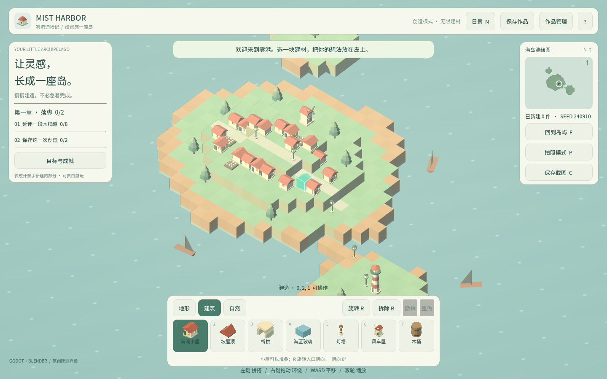
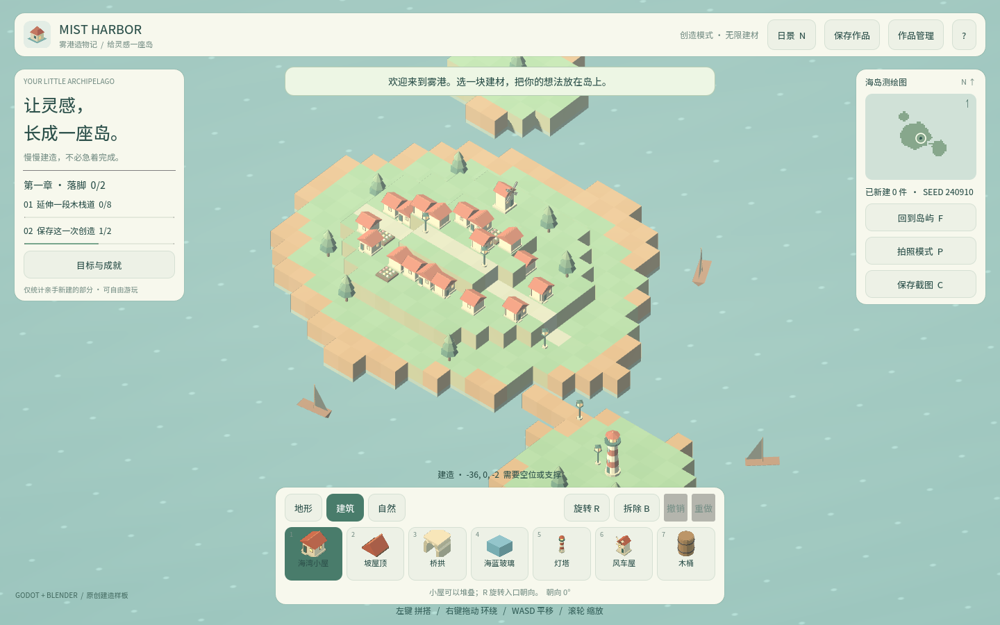

卷 5 · 第 28 章 体积优化：先测量，再动刀
本章目标：建立一套按顺序做的优化方法论——
从"零成本的服务器压缩"到"最高成本的自定义构建"，每一档的收益与代价都写清楚。
对应任务：T33（体积） | 对应文件：export_presets.cfg、project/docs/requirements.md
28.1 先测量：钱花在哪
当前 Web 产物（第 25 章实测）：
| 文件 | 大小 | 占比 |
|---|---|---|
| --- | ---: | ---: |
index.wasm | 37.68 MB | 98.3% |
index.pck | 0.40 MB | 1.0% |
index.js | 0.27 MB | 0.7% |
结论：资产不是问题，引擎才是。
我们的 9 件 GLB 合计才 282 KB（第 17 章），再怎么压也救不了 37 MB。
📌 第 25 章强调过一次，这里再强调：优化的第一性问题是"能不能用更小的引擎"。
28.2 四档优化，按顺序做
| 档 | 手段 | 收益 | 代价 |
|---|---|---|---|
| --- | --- | --- | --- |
| ① 零成本 | 服务器开 gzip / Brotli | 传输体积大幅下降（wasm 压缩率很高） | 只需配服务器 |
| ② 低成本 | 加载进度 + 首屏提示 | 体感改善最明显 | 改几行 HTML/JS |
| ③ 中成本 | 纹理压缩、外部 pck 按需加载、砍无用资源 | 有限（我们资产本身很小） | 需要重构加载 |
| ④ 高成本 | 自定义引擎构建（去掉不用模块） | 最大，可降到十几 MB | 需自行用 SCons 编译模板 |
顺序原则：先做 ①②（几乎白拿），再评估要不要上 ④。
28.3 ① 服务器压缩：最容易忘的一档
.wasm 是二进制但压缩率很高，托管时开启：
Nginx: gzip on; gzip_types application/wasm;
# 或 brotli
Vercel / Netlify / GitHub Pages: 多数默认已对静态资源压缩
自托管 python -m http.server: 不压缩（仅本地预览，别拿它测体积）验证方法：用浏览器开发者工具的 Network 面板看content-encoding: br/gzip 与实际传输大小（不是资源大小）。
📌 很多人以为"37 MB 太大没法上线"，其实传输的可能只有十几 MB——
前提是托管服务真的开了压缩。这一档经常被完全忽略。
28.4 ② 加载体验：等待需要反馈
37 MB 即使压缩也要几秒。玩家在这几秒里需要看到：
进度百分比 / 进度条 → 游戏标题与一句提示 → 加载完成后自动获得焦点Godot 的 Web 外壳自带一个加载条，但可以做三件事：
| 改进 | 做法 |
|---|---|
| --- | --- |
| 自定义 HTML 外壳 | html/custom_html_shell 指向自己的模板 |
| 主题色一致 | html/head_include 里加 theme-color（已做） |
| 首屏不空白 | 外壳里放静态的标题与背景色，避免白屏 |
判断标准：玩家知道在加载，就不会以为坏了。
28.5 ④ 自定义构建：什么时候值得
Godot 支持用 SCons 编译裁剪过的引擎模板：
去掉不用的模块：如 OpenXR、WebXR、部分 2D/3D 特性、第三方库…
收益：wasm 可显著减小（取决于裁掉了什么）
代价：需要构建环境、编译时间、每次升级引擎都要重编什么时候值得做：
- 目标用户对首屏极度敏感（广告投放、展会扫码）
- 已确定不会用到被裁掉的模块
- 有 CI 能自动产出模板（第 32 章）
什么时候别做：体积没成为真实瓶颈时——它引入的维护成本是长期的。
28.6 别忘了"内容侧"的预算
即使引擎占大头，资产预算仍要定死（第 17、18 章）：
| 预算项 | 当前 | 建议上限 |
|---|---|---|
| --- | --- | --- |
| GLB 总体积 | 282 KB | 1 MB |
| 单件三角面 | ≤ 632 | 1500 |
| 字体子集 | 299 KB | 保持只含用到的字 |
| 存档 | — | ≤ 4 MB（requirements.md） |
把预算写进文档，新增资产时才有裁判（第 18 章的检查清单）。
🌩 在云端 agent（web-cb）里是什么样
| 🖥 本地路线 | 🌩 云端 agent（web-cb） | |
|---|---|---|
| --- | --- | --- |
| 压缩验证 | 本地起服务（注意：http.server 不压缩） | 云端托管通常已开 → 用云端测真实传输体积 |
| 自定义构建 | 本地 SCons 编译 | 云端最适合：编译一次，团队共用模板 |
| 产物归档 | 本地目录 | 云端归档 wasm/pck，便于对比每次构建的体积 |
| 建议 | — | 把"产物大小"做成构建日志里的一行，长期跟踪 |
🌩 云端最有价值的组合：自定义构建在云端做一次 + 产物体积写进构建日志，
之后任何人都能看到"这次改动让包体变了多少"。
28.7 常见坑速查（本章）
| 现象 | 原因 | 处理 |
|---|---|---|
| --- | --- | --- |
| 上线后还是慢 | 服务器没开压缩 | 检查 content-encoding |
| 本地测出 37 MB 就放弃 | 用 http.server 测（不压缩） | 用真实托管环境测 |
| 玩家以为卡死 | 没进度反馈 | 自定义外壳 + 首屏 |
| 压缩资产没效果 | 资产本来就小 | 别在资产上浪费时间 |
| 自定义构建后功能缺失 | 裁掉了还在用的模块 | 先列"确实用不到的模块清单" |
| 体积长期失控 | 没有记录基线 | 构建日志输出各产物大小 |
28.8 本章作业
- 按顺序列出四档优化，说明各自收益与代价，指出为什么 ① 最该先做
- 解释为什么"本地用
http.server测体积"会得出错误结论 - 说出三个内容侧预算值，并说明新增资产时谁来当裁判
- 用浏览器 Network 面板查看一次 Web 导出，记录资源大小与传输大小的差值
🎓 教学提示（给教师 / 直播主）
- 概念锚点：优化顺序 = 收益/成本比排序。不是"哪个效果大先做哪个"。
- 课堂演示：同一个页面，开/关 gzip 两次加载，看 Network 面板差异。
- 高频误解：学生一上来就想"压缩贴图"。用占比数据纠正。
- 讨论题：什么情况下你应该做自定义构建？（答：体积成为真实转化瓶颈时）
- 批改要点：作业 1 必须指出 ① 零成本且常被忽略。
🖼 本章图集


📹 录屏分镜（9 分钟）
| 时间 | 画面 | 解说词要点 |
|---|---|---|
| --- | --- | --- |
| 00:00–01:30 | 产物占比表 | "98% 是引擎。" |
| 01:30–03:00 | 四档优化排序 | "先白拿，再动刀。" |
| 03:00–04:40 | Network 面板：资源大小 vs 传输大小 | "压缩是白给的。" |
| 04:40–06:00 | 加载体验三件事 | "等待需要反馈。" |
| 06:00–07:30 | 自定义构建的取舍 | |
| 07:30–09:00 | 内容预算 + 作业 |
🎬 视频位（待录制）
把录好的视频放到course/media/video/28/（mp4 / webm / mov），重新执行 python tools/course_build.py 即会自动内嵌；首帧默认用本章第一张截图作为封面。分镜脚本见上一节。🖼 配图清单
| 文件名 | 内容 | 生成方式 |
|---|---|---|
| --- | --- | --- |
28-web-running.png | Web 版运行画面（优化的对象） | python tools/course_capture.py --chapter 28 |
28-loaded-scene.png | 加载完成后的场景 | 同上 |
🎥 直播脚本（L3 片段，10 分钟）
- 开场："37 MB 能不能上线？"——先问"传输是多少"
- 演示：Network 面板看 content-encoding 与传输大小
- 互动：让观众报自己站点的压缩配置
- 收尾：卷 5 小结（Web/Windows/移动端/体积）
❓ 本章 FAQ
Q：Brotli 比 gzip 好多少？
A：通常更好（尤其对 wasm 这类大二进制），但具体比例要实测——别猜，测。
Q：能不能只加载用到的引擎功能（动态）？
A：当前 Godot Web 构建是整体 wasm，不做运行时按需加载；只能靠构建期裁剪。
Q：字体占多少？值得优化吗？
A：299 KB（子集后）。相对 37 MB 很小，但它是"能省且不损害体验"的典型，见第 32 章。